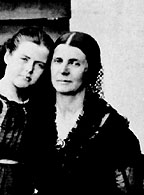

|

|

|
|
|
Confederate spy Rose O'Neal Greenhow was born in Montgomery
County, Maryland, and grew up in Washington, D.C. In 1835,
she married Virginian Robert Greenhow. The couple had four
children. As the wife of a politician in the State
Department, Rose entertained diplomats and cultivated
relationships with future politicians. Rose's work with
Robert researching American land claims in the Pacific
Northwest gave her experience with map skills and analysis.
In 1850, she supported John C. Calhoun's efforts against
sectional compromise. Robert left the State Department in
1850 and the family moved to San Francisco. Rose returned
to Washington after his death in 1854.
Once the Civil War began, Thomas Jordan, Confederate
General P.G.T. Beauregard's adjutant general, recruited
Greenhow to head an espionage ring in Washington. As a
socially prominent widow, Greenhow easily gathered
information from new officers and government workers, all
eager to show their importance. This information proved
particularly valuable in July 1861, when information
Greenhow relayed to Beauregard at the Battle of Bull Run
contributed to Confederate victory.
The Union secret service placed Greenhow under house
arrest August 23, 1861, but she continued to send
information South and published letters criticizing the
Union's treatment of women. To stop these activities, the
Federal government transferred Greenhow to the Old Capitol
Prison in January 1862. In June, she was exiled to the
Confederacy in a prisoner exchange. Greenhow departed for
Richmond wrapped in a Confederate flag and carrying a diary
of her imprisonment. President Jefferson Davis and
Beauregard rewarded her espionage activities.
Greenhow traveled to Europe in August 1863 as an
unofficial diplomat for the Confederacy. There she
published her diary, My Imprisonment and the First Year of
Abolition Rule in Washington. After unsuccessfully pleading
her case for Confederate support, she started home in August
1864. Chased by Federal blockaders, Greenhow's ship ran
aground near North Carolina and on October 1, 1864, Greenhow
insisted on being rowed ashore. Her boat overturned and she
drowned, weighed down by the gold she was carrying for the
Confederate government. Greenhow was buried with military
honors.
Source: Joan Waugh, ed., Facts on File Encyclopedia of American
History: Civil War and Reconstruction, 1856 to 1869 (New York: Facts on
File, 2003), 159-160.
|